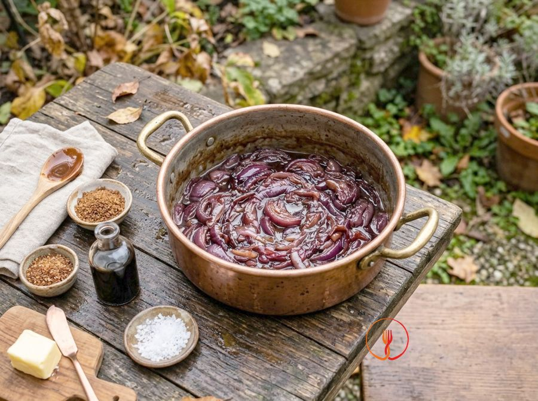

Caramelized onions
Ingredients
- red or white onions500 g
- extra virgin olive oil25 ml
- butter20 g
- brown sugar25 g
- balsamic vinegar20 ml
- water30 ml
- Saltto taste
Allergens
Milk, Sulphites
Method
- Peel the onions, remove the ends, and cut them into thin, even slices.
- Pour the oil and butter into a large pan and heat them over low heat.
- Add the onions and stir to distribute them evenly in the seasoning.
- Cook for about 10 minutes over low heat, stirring periodically until they begin to soften.
- Add the brown sugar and stir to encourage caramelization.
- Pour in the balsamic vinegar and water, then continue cooking for about 20–25 minutes.
- Stir frequently and add a little water if the onions start to stick to the bottom.
- Stir frequently and add a little water if the onions start to stick to the bottom.
Chef's tips
Tips, mistakes, and alternatives:
- Do not cook over high heat: the onions might burn on the outside.
- The color should develop gradually.
- You can replace balsamic vinegar with apple cider vinegar.
- You can use honey instead of sugar, slightly reducing the amount.
- They are excellent with hamburgers, cheeses, roasts, and bruschettas.
Nutrition facts (estimate)
| Per serving (85 g) | Per 100 g | |
|---|---|---|
| Energy | 690 kJ / 165 kcal | 812 kJ / 194 kcal |
| Protein | 1.4 g | 1.6 g |
| Carbohydrates | 18 g | 21 g |
| of which sugars | 12 g | 14 g |
| Fat | 9.9 g | 12 g |
| of which saturates | 3.4 g | 3.9 g |
| Fibre | 2.1 g | 2.5 g |
| Salt | 0.3 g | 0.3 g |
AI estimates based on average CREA / USDA data: indicative only, not a substitute for medical or dietitian advice.
Open the recipe in the app for the shopping list, ingredient sheets and nearby shops.